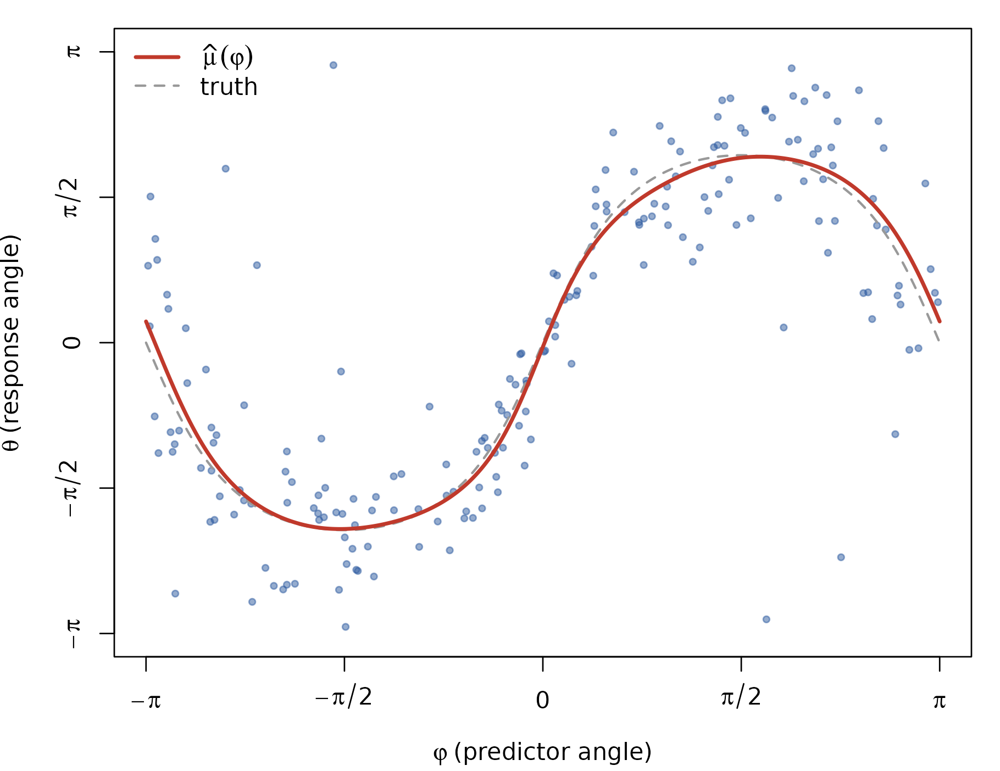
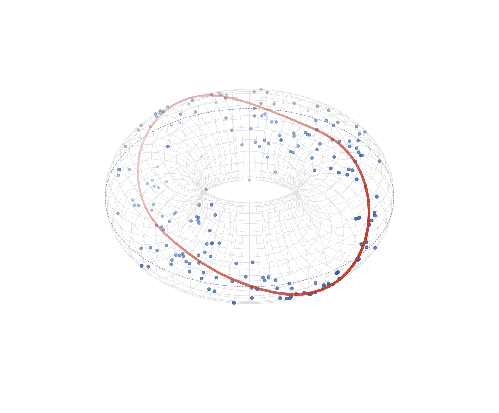

Circular–circular regression on the torus
Source:vignettes/articles/circular-circular-regression.Rmd
circular-circular-regression.RmdA circular–circular (C–C) regression has an angle on both sides: the
response
and the predictor
each live on the circle. In circlss this is just a
circular-response GAM whose covariate enters through one of mgcv’s
cyclic spline bases, so the fitted curves close seamlessly at
:
with and two cyclic smooths. The natural picture of C–C data is a torus: the predictor angle runs around the ring, the response angle around the tube, and the fitted mean direction is a closed curve winding over the surface.
Simulate data
library(mgcv)
#> Loading required package: nlme
#> This is mgcv 1.9-4. For overview type '?mgcv'.
library(circlss)
# von Mises deviates, Best & Fisher (1979) rejection sampling
rvm <- function(n, mu, kappa) {
mu <- rep_len(mu, n); kappa <- rep_len(kappa, n); out <- numeric(n)
for (i in seq_len(n)) {
k <- kappa[i]
a <- 1 + sqrt(1 + 4 * k * k); b <- (a - sqrt(2 * a)) / (2 * k)
r <- (1 + b * b) / (2 * b)
repeat {
z <- cos(pi * runif(1)); f <- (1 + r * z) / (r + z)
cc <- k * (r - f); u2 <- runif(1)
if (cc * (2 - cc) - u2 > 0 || log(cc / u2) + 1 - cc >= 0) {
out[i] <- sign(runif(1) - 0.5) * acos(max(min(f, 1), -1)) + mu[i]
break
}
}
}
atan2(sin(out), cos(out))
}
set.seed(20260612)
n <- 200
phi <- runif(n, -pi, pi)
mu_true <- 2 * atan(1.6 * sin(phi))
kappa_true <- exp(1.4 + 0.6 * cos(phi))
dat <- data.frame(theta = rvm(n, mu_true, kappa_true), phi = phi)Fit
Both distribution parameters get their own cyclic smooth; the knots pin the period to . Smoothing parameters are selected by full Newton REML (the family implements log-likelihood derivatives to fourth order).
b <- gam(list(theta ~ s(phi, bs = "cc", k = 10),
~ s(phi, bs = "cc", k = 10)),
family = vmlss(), data = dat, method = "REML",
knots = list(phi = c(-pi, pi)))
summary(b)
#>
#> Family: vmlss
#> Link function: tanhalf log
#>
#> Formula:
#> theta ~ s(phi, bs = "cc", k = 10)
#> ~s(phi, bs = "cc", k = 10)
#>
#> Parametric coefficients:
#> Estimate Std. Error z value Pr(>|z|)
#> (Intercept) 0.008304 0.050229 0.165 0.869
#> (Intercept).1 1.257866 0.091100 13.808 <2e-16 ***
#> ---
#> Signif. codes: 0 '***' 0.001 '**' 0.01 '*' 0.05 '.' 0.1 ' ' 1
#>
#> Approximate significance of smooth terms:
#> edf Ref.df Chi.sq p-value
#> s(phi) 5.563 8 511.37 <2e-16 ***
#> s.1(phi) 2.893 8 34.23 <2e-16 ***
#> ---
#> Signif. codes: 0 '***' 0.001 '**' 0.01 '*' 0.05 '.' 0.1 ' ' 1
#>
#> Deviance explained = 62.2%
#> -REML = 201.38 Scale est. = 1 n = 200Everything mgcv provides for general families works as usual — here are the two estimated smooths, on the link scale with credible bands (: tan-half location; : log concentration):
plot(b, pages = 1, scheme = 1)
Flat view
The fitted mean direction on the response scale, with the data. With this link the mean stays inside , the Fisher–Lee branch:
phig <- seq(-pi, pi, length.out = 400)
pred <- predict(b, newdata = data.frame(phi = phig), type = "response")
mu_hat <- pred[, 1]
op <- par(mar = c(4, 4, 1, 1))
plot(dat$phi, dat$theta, pch = 19, col = adjustcolor("#2c5aa0", 0.5),
cex = 0.6, xlab = expression(varphi ~ "(predictor angle)"),
ylab = expression(theta ~ "(response angle)"),
xlim = c(-pi, pi), ylim = c(-pi, pi), axes = FALSE)
axis(1, at = c(-pi, -pi/2, 0, pi/2, pi),
labels = expression(-pi, -pi/2, 0, pi/2, pi))
axis(2, at = c(-pi, -pi/2, 0, pi/2, pi),
labels = expression(-pi, -pi/2, 0, pi/2, pi))
box()
lines(phig, 2 * atan(1.6 * sin(phig)), col = "gray60", lwd = 1.6, lty = 2)
lines(phig, mu_hat, col = "#c0392b", lwd = 2.6)
legend("topleft", bty = "n", lwd = c(2.6, 1.6), lty = c(1, 2),
col = c("#c0392b", "gray60"),
legend = c(expression(hat(mu)(varphi)), "truth"))
par(op)Remember both axes are circles: the top and bottom edges are the same line, as are the left and right — which is exactly what the torus shows without the cut.
The torus
Predictor angle
around the ring, response angle
around the tube;
maps to
. Base graphics is
enough: persp() supplies the projection matrix and
everything is drawn through trans3d(), with depth-based
fading for the 3-D cue (the dashed circle is the outer equator
,
the zero-response reference).
torus_xyz <- function(phi, theta, R = 1.9, r = 0.95) {
list(x = (R + r * cos(theta)) * cos(phi),
y = (R + r * cos(theta)) * sin(phi),
z = r * sin(theta))
}
# view-space depth from the persp transformation matrix (trans3d gives
# only the projected x/y; the z/w component orders front vs back)
depth3d <- function(x, y, z, pm) {
p <- cbind(x, y, z, 1) %*% pm
p[, 3] / p[, 4]
}
draw_torus <- function(dat, mu_hat, phig, R = 1.9, r = 0.95,
theta_view = 45, phi_view = 38) {
op <- par(mar = c(0.2, 0.2, 0.2, 0.2))
on.exit(par(op))
lim <- R + r + 0.1
pm <- persp(x = c(-lim, lim), y = c(-lim, lim),
z = matrix(c(-r, -r, r, r), 2, 2),
zlim = c(-r - 0.5, r + 0.5),
theta = theta_view, phi = phi_view, d = 4,
scale = FALSE, expand = 1,
col = NA, border = NA, box = FALSE, axes = FALSE)
## wireframe: tube circles at fixed phi, ring circles at fixed theta
thd <- seq(-pi, pi, length.out = 80)
for (p in seq(-pi, pi, length.out = 49)[-1]) {
w <- torus_xyz(rep(p, length(thd)), thd, R, r)
lines(trans3d(w$x, w$y, w$z, pm), col = "gray88", lwd = 0.6)
}
phd <- seq(-pi, pi, length.out = 160)
for (t in seq(-pi, pi, length.out = 25)[-1]) {
w <- torus_xyz(phd, rep(t, length(phd)), R, r)
lines(trans3d(w$x, w$y, w$z, pm), col = "gray88", lwd = 0.6)
}
## outer equator (theta = 0): the zero-response reference line
w <- torus_xyz(phd, rep(0, length(phd)), R, r)
lines(trans3d(w$x, w$y, w$z, pm), col = "gray55", lty = 3, lwd = 0.9)
## data on the torus surface, depth-faded (near = opaque, far = faint)
w <- torus_xyz(dat$phi, dat$theta, R, r)
dp <- depth3d(w$x, w$y, w$z, pm)
a <- 0.15 + 0.7 * (dp - min(dp)) / diff(range(dp))
pt <- trans3d(w$x, w$y, w$z, pm)
ord <- order(dp) # paint far points first
points(pt$x[ord], pt$y[ord], pch = 19,
cex = 0.4 + 0.25 * a[ord],
col = sapply(a[ord], function(ai) adjustcolor("#2c5aa0", ai)))
## fitted mean-direction curve mu-hat(phi), winding over the tube --
## painted in depth order, far half faint
w <- torus_xyz(phig, mu_hat, R, r)
dp <- depth3d(w$x, w$y, w$z, pm)
cv <- trans3d(w$x, w$y, w$z, pm)
a <- 0.25 + 0.75 * (dp - min(dp)) / diff(range(dp))
seg <- data.frame(x0 = head(cv$x, -1), y0 = head(cv$y, -1),
x1 = tail(cv$x, -1), y1 = tail(cv$y, -1),
d = head(dp, -1), a = head(a, -1))
seg <- seg[order(seg$d), ]
segments(seg$x0, seg$y0, seg$x1, seg$y1,
col = sapply(seg$a, function(ai) adjustcolor("#c0392b", ai)),
lwd = 2.2 + 1.6 * seg$a, lend = 1)
invisible(pm)
}
draw_torus(dat, mu_hat, phig)
The red curve is the fitted conditional mean direction : a closed loop on the torus, rising over the tube where the response leads the predictor and dipping below where it lags, crossing the dashed equator at the two angles where .
Same model, same numbers, in Python
This model class is the mgcv twin of pycircstat2’s
CLRegression(..., family=vmlss); the two implementations
are differentially tested against each other on every release —
identical data, Newton-REML both sides — and agree to machine precision
for cyclic-spline models like this one (see
tests/testthat/test-vmlss-parity.R and
dev/parity/ in the repository).